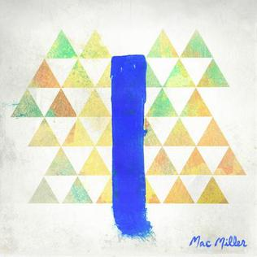
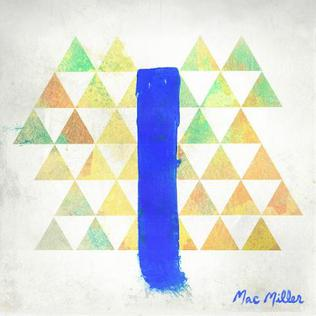

SWIMMING
Mac Miller's album Swimming is full of rhythmic jazz-influenced beats and melodic synths that bring an ethereal sense of emotion to listeners. However, careful analysis of the album art expresses a much darker tone. For much of his career, Mac fell victim to substance abuse issues that left him with feeling of emptiness on top of a wildly successful career. Miller is pictured sitting in a pink suit with defeated posture and facial expressions. Although no direct conclusions can be made to his bare feet, we may assume that it may follow the representation of death in art (Moyer, 2019). With such a tone in mind, analysis of the cover art to be a reflection of Mac's mental state. Mac's bright pink suit distracts audiences from his exhausted posture, signaling that how he masks many of his deepest personal issues with a bubbly personality and upbeat songs. The most chilling of realizations, however, is understood in the frame of what Mac is sitting inside. Dark and ominous themes of death and struggle help audiences draw a comparison between this small doorway where he slumps to be representative of a coffin.


 
